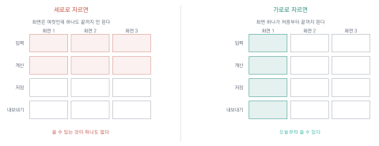

해법을 찾고 고른다
이 장을 마치면
- 한 문제에 대해 서로 다른 해법을 여러 개 만들어 낼 수 있다.
- 해법을 비교할 기준을 세우고 표로 정리할 수 있다.
- 한 학기 안에 만들 수 있는 크기로 범위를 줄일 수 있다.
- 종이 위 프로토타입으로 해법을 미리 검증할 수 있다.
- 만들기 전에 해법 명세서를 작성할 수 있다.
문제를 잘 정의하면 해법이 저절로 떠오를 것 같지만 그렇지 않다. 대개는 가장 먼저 떠오른 하나에 매달리게 되고, 그것이 최선인지는 끝내 확인하지 못한다. 인공지능은 이 지점에서 특히 쓸모가 있다 — 사람이 지치는 여러 개 만들기를 지치지 않고 해내기 때문이다.
이 장에서는 대안을 여러 개 만들고, 기준을 세워 고르고, 고른 것을 만들 수 있는 크기로 줄인다. 그리고 다음 판을 만들기 전에 종이 위에서 먼저 그려 본다. 마지막 절에서 쓰는 해법 명세서가 7장에서 다시 만들 때의 설계도가 되고, 9–12장 내내 기준점이 된다.
이번 제작은 처음으로 빼는 작업이다. 지금까지 붙인 기능 가운데 4장의 관찰에서 아무도 쓰지 않은 것을 골라 지운다.
기능이 줄었는데 더 쓸 만해지는 경험을 하게 된다. 그 이유를 설명할 수 있게 되는 것이 이 장의 목표다.
6.1 대안을 많이 만드는 법
5장에서 어느 가지부터 손댈지 정했다. 이제 그 가지를 어떻게 다룰지 정할 차례다. 그런데 대부분의 사람이 여기서 같은 실수를 한다. 맨 처음 떠오른 하나에 매달린다.
첫 아이디어는 왜 위험한가
첫 아이디어가 나쁘다는 뜻이 아니다. 문제는 비교 대상이 없다는 것이다. 하나만 있으면 그것이 좋은지 나쁜지 판단할 방법이 없다. 게다가 사람은 한 번 떠올린 것에 애착이 생겨서, 그 뒤로는 그것을 지지하는 근거만 눈에 들어온다.
그래서 이 절에서는 평가하지 않고 늘리기만 한다. 좋은지 나쁜지는 다음 절에서 따진다. 이 두 가지를 섞으면 늘어나다 말고 멈춘다.
발산과 수렴을 섞지 않는다. 늘릴 때는 판단하지 않고, 판단할 때는 늘리지 않는다. 이 구분 하나로 나오는 대안의 수가 두 배 이상 달라진다.
대안을 갈라 내는 축
무작정 더 생각해 보자로는 잘 안 나온다. 축을 주면 나온다.
축 1: 그 일을 어떻게 할 것인가.
- 없앤다 — 그 일을 아예 안 해도 되게 한다
- 줄인다 — 횟수나 양을 줄인다
- 옮긴다 — 다른 사람이나 다른 시점으로 옮긴다
- 자동으로 만든다 — 기계가 하게 한다
- 쉽게 만든다 — 사람이 하되 덜 힘들게 한다
정산 문제에 이 축을 대 보자. 없앤다는 애초에 현금 지출을 없애고 계좌 하나로만 쓰게 하는 것이다. 옮긴다는 지출한 사람이 그 자리에서 기록하게 하는 것이고, 자동으로 만든다는 거래 내역을 읽어 자동 분류하는 것이다. 이 다섯이 벌써 서로 아주 다른 해법이다.
축 2: 무엇을 바꿀 것인가.
- 도구를 만든다 — 이 수업의 기본
- 규칙을 바꾼다 — 언제 어떻게 하기로 정한다
- 정보 전달 방식을 바꾼다 — 어디에 어떻게 알리는지
- 이미 있는 것을 쓴다 — 무료 서비스, 학교가 제공하는 것
마지막 항목을 반드시 포함하자. 만들지 않는 것이 최선일 때가 있다. 이 수업의 목표는 무언가를 만드는 것이지만, 만들 필요가 없다는 판단도 훌륭한 결과다(그 경우 두 번째로 아픈 문제로 옮기면 된다).
인공지능으로 늘리기
사람은 열 개를 만들다 지친다. 인공지능은 지치지 않는다. 다만 그냥 시키면 비슷한 것 열 개가 나온다.
아래는 내가 다루려는 문제와, 그중 손대기로 정한 부분이다.
(문제 진술문 + 트리에서 고른 가지를 붙여 넣는다)
이 부분을 다룰 방법을 12가지 제안해 줘. 규칙은 다음과 같다.
- 서로 확실히 다른 방법이어야 한다. 세부만 다른 것은 하나로 친다
- 다음 다섯 종류가 각각 최소 둘씩 들어가야 한다: 그 일을 없애기 / 줄이기 / 다른 사람에게 옮기기 / 자동으로 만들기 / 사람이 하되 쉽게 만들기
- 만들지 않는 해법(규칙을 바꾸거나 이미 있는 것을 쓰는 것)을 최소 셋 포함할 것
- 각각을 한 문장으로만 설명하고, 평가는 하지 말 것
목록만 달라. 어느 것이 좋은지는 내가 정한다.
마지막 줄이 중요하다. 이렇게 쓰지 않으면 3번을 추천드립니다 같은 말이 붙는데, 그것을 읽는 순간 우리 판단이 오염된다.
열두 개를 받으면 대개 절반은 뻔하고, 서넛은 우리 사정에 맞지 않고, 두셋이 쓸 만하다. 그거면 된다. 목적은 좋은 답을 받는 것이 아니라 내가 생각하지 못한 방향을 하나라도 보는 것이다.
남의 방식을 보기
또 하나 값싼 방법이 있다. 같은 문제를 남들은 어떻게 하고 있는지 보는 것이다.
이 문제를 다른 조직이나 다른 분야에서는 어떻게 해결하고 있는지 알려 줘. 우리와 비슷한 규모(수십 명)의 경우와, 훨씬 큰 조직의 경우를 나눠서 알려 줘. 실제로 존재하는 방식만 말하고, 확실하지 않으면 표시해 줘.
여기서 나온 것은 반드시 확인해야 하지만(2.3절), 방향을 잡는 데는 도움이 된다. 특히 훨씬 큰 조직의 방식을 보면 우리가 왜 그렇게까지 할 필요는 없는지도 알게 된다.
목록을 남긴다
이 절의 결과물은 대안 목록이다. 다음 절에서 여기서 골라낼 것이므로, 지금 버리지 말고 전부 적어 둔다.
번호 방법(한 문장) 종류 누가 만드나
1 지출한 사람이 그 자리에서 올린다 옮기기 내가 만든다
2 현금 지출을 없애고 계좌 하나로 쓴다 없애기 규칙만 바꾸면 됨
3 거래 내역을 자동으로 분류한다 자동화 내가 만든다
...
12종류와 누가 만드나 열이 있는 이유는, 다음 절에서 비교할 때 이 두 가지가 판단에 크게 작용하기 때문이다.
6.2 무엇을 기준으로 고를 것인가
이제 수렴할 차례다. 열두 개를 넷으로, 넷을 하나로 줄인다. 그런데 어느 것이 가장 좋은가라고 물으면 답이 안 나온다. 좋다는 말에는 여러 뜻이 섞여 있기 때문이다.
네 가지 기준
이 수업의 조건에서는 다음 넷이면 충분하다.
효과 — 이걸 하면 문제가 얼마나 줄어드는가? 4.4절의 성공 기준에 얼마나 다가가는가?
만들 수 있는가 — 한 달 안에, 나 혼자서, 무료 도구로 만들 수 있는가? 여기에는 내가 그 분야를 아는가도 포함된다.
쓰이겠는가 — 사람들이 실제로 쓸까? 지금 방식보다 확실히 편한가? 새로 배워야 할 것이 많지 않은가?
위험은 없는가 — 잘못되면 어떤 일이 생기는가? 개인정보나 돈이 걸리는가? 되돌릴 수 있는가?
| 대안 | 효과 | 만들기 | 쓰이나 | 위험 |
|---|---|---|---|---|
| 지출한 사람이 그 자리에서 올린다 | 큼 | 가능 | 보통 | 낮음 |
| 현금을 없애고 계좌 하나로 | 큼 | 만들 것 없음 | 낮음 | 낮음 |
| 거래 내역을 자동 분류 | 중간 | 어려움 | 높음 | 보통 |
| 정산 서식을 통일해 배포 | 작음 | 쉬움 | 높음 | 낮음 |
표 6.1를 보면 흥미로운 일이 생긴다. 효과가 가장 큰 두 번째 대안은 만들 것이 없는 대신 쓰이지 않을 가능성이 높다 — 사람들에게 현금을 쓰지 말라고 강제할 수 없기 때문이다. 세 번째는 쓰이기는 하겠지만 만들기 어렵다. 첫 번째가 균형이 맞는다.
점수를 매길 것인가
각 칸에 숫자를 넣고 가중치를 곱해 합계를 내는 방법이 있다. 유혹적이지만 권하지 않는다.
이유는 두 가지다. 첫째, 숫자를 붙이는 순간 근거 없는 정밀함이 생긴다. 3.7 대 3.5는 아무 의미가 없다. 둘째, 대개 자기가 하고 싶은 것이 1등이 되도록 가중치를 조정하게 된다.
대신 말로 적고 눈으로 비교한다. 크다/보통/작다 세 단계면 충분하다. 그리고 표를 만든 뒤 다음을 스스로에게 묻는다.
- 표를 만들기 전과 후에 마음이 바뀌었는가?
- 바뀌지 않았다면, 표를 만들기 전부터 답이 정해져 있던 것은 아닌가?
- 어느 칸이 가장 확신이 없는가? 그것을 확인할 방법이 있는가?
비교표는 결정을 대신하는 도구가 아니라 생각을 드러내는 도구다. 표를 만드는 진짜 효과는, 내가 무엇을 근거로 판단하고 있었는지가 눈에 보이는 것이다.
자주 나오는 판단 실수
만들기 쉬운 것을 고른다. 가장 흔하다. 효과가 작아도 만들기 쉬우면 손이 간다. 그렇게 만든 것은 대개 아무도 안 쓴다. 쉽다는 기준이 아니라 조건이다.
멋있어 보이는 것을 고른다. 인공지능이 자동으로 분류해 준다는 쪽이 발표하기에 좋아 보인다. 그런데 정확도가 80%면 나머지 20%를 손으로 고쳐야 하고, 결국 손으로 하는 것보다 오래 걸린다.
내가 쓰고 싶은 기술을 고른다. 새로 배운 도구를 써 보고 싶은 마음은 자연스럽다. 다만 그것이 이 문제에 맞는지는 따로 판단해야 한다.
모두를 만족시키려 한다. 이해관계자가 넷인데 넷 다 만족시키려 하면 아무 결정도 못 한다. 4.2절에서 한 명을 골랐던 것을 기억하자.
인공지능에게 비교시키기
기준을 세우는 데는 도움을 받을 수 있다. 다만 결정을 시키지는 않는다.
아래는 내가 고려 중인 해법 네 가지와, 내가 세운 비교 기준 네 가지다.
(대안과 기준을 붙여 넣는다)
다음을 알려 줘.
1. 내가 빠뜨린 중요한 기준이 있는가? (있다면 왜 중요한지)
2. 각 대안에서 내가 과소평가하고 있을 위험은 무엇인가?
3. 이 중 어느 것도 좋지 않다면, 그 이유는 무엇일까?
어느 것을 고르라고 추천하지는 말아 줘. 판단 재료만 달라.
2번이 특히 쓸모 있다. 우리는 하고 싶은 대안의 위험을 자연스럽게 낮춰 본다. 밖에서 보는 눈이 그것을 짚어 준다.
3번의 답이 설득력 있게 나온다면 1절로 돌아가 대안을 더 만들어야 한다. 열두 개를 만들었는데도 쓸 만한 것이 없다면, 대개 문제 정의가 잘못되었거나 범위가 너무 크다. 다음 절에서 범위를 줄인다.
6.3 만들 수 있는 크기로 줄인다
해법 하나를 골랐다. 이제 마지막이자 가장 중요한 작업이 남았다. 그것을 한 달 안에 끝낼 수 있는 크기로 줄이는 일이다.
이 절을 대충 하면 학기가 끝날 때 미완성 결과물이 남는다. 매 학기 반드시 일어나는 일이고, 예외 없이 원인은 같다 — 처음에 너무 크게 잡았다.
학생들이 잡는 크기
실제로 나온 기획들이다.
동아리 통합 관리 시스템 — 회비, 출석, 일정, 게시판, 사진첩
학과 커뮤니티 앱 — 로그인, 게시판, 쪽지, 알림, 강의평
AI 학습 도우미 — 필기 정리, 문제 생성, 오답 분석, 학습 계획
셋 다 4주 안에는 불가능하다. 회사에서 여러 사람이 몇 달을 들여야 하는 규모다. 그런데 학생들이 이렇게 잡는 이유가 있다 — 작게 잡으면 성의 없어 보일까 봐다.
정반대다. 작게 잡고 끝까지 만든 것이 크게 잡고 절반만 만든 것보다 훨씬 좋은 평가를 받는다. 왜냐하면 완성된 것만이 사람들에게 쓰이고, 쓰여야 반응을 받고, 반응을 받아야 배울 것이 생기기 때문이다.
최소 크기의 기준
최소 기능 제품MVP이라는 말이 있다. 쓸 만한 최소한의 것이라는 뜻이다. 이 수업의 기준으로 옮기면 이렇다.
한 사람이, 하나의 상황에서, 하나의 일을 끝까지 할 수 있다.
한 사람 — 여러 사람이 동시에 쓰는 것은 어렵다. 우선 한 사람이 쓰는 것으로 만든다.
하나의 상황 — 예외 상황은 나중에. 일단 가장 흔한 경우만 되게 한다.
하나의 일 — 기능 하나. 정산이면 정산만, 출석이면 출석만.
끝까지 — 이것이 핵심이다. 시작부터 끝까지 이어져야 한다. 입력만 되고 결과가 안 나오면 쓸 수 없다.
줄일 때 세로로 자르지 말고 가로로 자른다. 화면만 잔뜩 만들고 동작은 안 되는 것(세로)보다, 화면 하나가 처음부터 끝까지 동작하는 것(가로)이 낫다.

세 칸으로 나누기
기능을 적고 세 칸에 나눈다. 이 작업이 6장에서 가장 중요하다.
| 꼭 있어야 | 있으면 좋음 | 이번엔 안 함 |
|---|---|---|
| 지출 입력 (날짜·항목·금액·결제수단·이름) | 사진 첨부 | 로그인 |
| 입력한 목록 보기 | 월별로 나눠 보기 | 여러 동아리 지원 |
| 항목별 합계와 총계 | 항목 자동 추천 | 예산 대비 집행률 |
| 새로고침해도 안 지워짐 | 잘못 넣은 것 수정 | 통장 내역 자동 연동 |
| 표 파일로 내보내기 | 그래프 | 알림 발송 |
규칙이 셋 있다.
꼭은 다섯 개를 넘기지 않는다. 여섯 개째가 생각나면 하나를 있으면 좋음으로 옮긴다.
꼭만으로 일이 끝나야 한다. 표 6.2의 왼쪽 열만 있으면 정산을 처음부터 끝까지 할 수 있는가? 있다. 그러면 된 것이다.
이번엔 안 함을 반드시 적는다. 머릿속에서 지우는 것과 적어 두고 미루는 것은 다르다. 적어 두면 (1) 발표에서 왜 이것만 했는가에 답할 수 있고, (2) 다음 판의 목록이 되고, (3) 만드는 중에 자꾸 떠오르는 것을 그 자리에 던져 넣고 계속 갈 수 있다.
줄여도 되는지 확인하기
줄이고 나면 불안해진다. 이 정도로 문제가 해결되나? 확인하는 방법이 있다.
4.4절에서 정한 성공 기준으로 돌아가 본다. 꼭 목록만 있을 때 그 기준에 얼마나 다가가는가?
정산 문제의 성공 기준이 3시간 → 30분이었다. 지출한 사람이 그 자리에서 올리고 합계가 자동으로 나오면, 담당자가 할 일은 확인과 공유뿐이다. 30분 안에 된다. 줄인 범위로도 기준을 만족한다.
만약 만족하지 못한다면 두 가지 중 하나다. 기준이 너무 높거나, 더 줄이면 안 되는 것을 줄인 것이다. 어느 쪽인지 판단해 조정한다.
일단 만들면서 필요한 걸 추가하자는 계획은 계획이 아니다. 만들다 보면 무엇이든 필요해 보이고, 그렇게 범위가 늘어나 끝나지 않는다. 추가할 것이 생기면 이번엔 안 함 칸에 적고 계속 간다. 다 만든 뒤에 그 칸을 다시 본다.
6.4 종이 위 프로토타입
만들기 전에 마지막으로 할 일이 있다. 종이에 그려 보는 것이다. 십 분이면 되고, 이 십 분이 며칠을 아낀다.
왜 종이인가
도구로 그리면 예쁘게 만드는 데 시간을 뺏긴다. 색을 고르고 정렬을 맞추다 보면 정작 무엇이 어디에 있어야 하는가는 생각하지 않게 된다.
종이의 장점은 버리기 쉽다는 것이다. 마음에 안 들면 구겨서 다시 그린다. 화면에 만든 것은 아까워서 못 버린다.
무엇을 그리는가
화면 세 장이면 대개 충분하다.
1. 처음 열었을 때. 아무것도 없는 상태다. 여기서 사람은 무엇을 봐야 하는가? 무엇을 해야 할지 알 수 있는가? 초심자가 가장 많이 빠뜨리는 화면이다.
2. 일하는 중. 자료가 들어 있고 사람이 무언가를 하는 상태다. 가장 오래 보게 되는 화면이므로 여기에 시간을 쓴다.
3. 잘못됐을 때. 빈칸으로 저장했거나, 숫자 자리에 글자를 넣었거나, 자료가 너무 많을 때. 이 화면을 미리 생각해 두면 9.5절에서 다듬을 것이 절반으로 준다.
[ 무엇을 입력하는가 ] 칸의 이름과 종류(글자/숫자/날짜/고르기)
[ 무엇이 나오는가 ] 결과가 어디에 어떤 모양으로
[ 무엇을 누르는가 ] 단추 이름과 누르면 생기는 일
[ 처음에 보이는 것 ] 자료가 하나도 없을 때의 화면
[ 잘못 넣으면 ] 어떤 안내가 어디에 뜨는가흐름도 한 장
화면 세 장 옆에 흐름을 그린다. 화살표로 이으면 된다.
페이지 열기 → (자료 없음) 안내 문구 → 입력 → [추가] → 목록에 쌓임
→ 합계 자동 갱신 → [내보내기] → 파일 저장
이 한 줄이 7.5절에서 프롬프트의 뼈대가 된다. 흐름이 분명하지 않으면 인공지능도 무엇을 만들지 모른다.
종이 위에서 시험하기
그림이 있으면 만들기 전에 시험할 수 있다. 다른 사람에게 종이를 보여 주고 시켜 보는 것이다.
- 종이를 내밀고 이걸로 지출 하나를 입력해 보세요라고 한다
- 설명하지 않는다. 손가락으로 짚는 것을 지켜본다
- 망설이는 지점, 엉뚱한 곳을 짚는 지점을 표시한다
- 다 끝나면 무엇을 하는 것 같았느냐고 묻는다
세 명에게만 해 봐도 고칠 것이 서넛 나온다. 그리고 이 단계에서 고치는 비용은 연필로 지우는 것이다. 만든 뒤에 고치면 훨씬 비싸다.
사람들이 종이 앞에서 망설이면, 화면 앞에서도 망설인다. 종이에서 안 되는 것은 만들어도 안 된다.
이름을 정한다
작은 일이지만 지금 해 두면 좋다. 화면에 들어갈 말을 정하는 것이다.
- 단추에 뭐라고 쓸 것인가? (추가인가 등록인가 저장인가)
- 항목 이름은? (금액인가 액수인가 비용인가)
- 사람들이 실제로 쓰는 말은 무엇인가?
마지막 항목이 기준이다. 4.2절에서 인터뷰할 때 사람들이 쓴 말을 그대로 쓰는 것이 가장 좋다. 동아리에서 총무라고 부르면 화면에도 총무라고 쓴다. 회계 담당자라고 쓰면 순간 낯설어진다.
종이 스케치를 사진으로 찍어 02_해법/ 폴더에 넣어 두자. 두 곳에서 쓰인다. 하나는 7.5절 — 그림을 그대로 첨부해 만들어 달라고 할 수 있다. 다른 하나는 13장 발표 — 처음 스케치와 완성된 화면을 나란히 보여 주면 과정이 한눈에 전달된다.
6.5 만들기 전에 적는 해법 명세서
4–6장에 걸쳐 알아낸 것을 한 장으로 묶는다. 이 문서를 해법 명세서라고 부르자. 7장에서 이것을 프롬프트로 옮겨 처음부터 다시 만들고, 12장까지 이 문서가 기준점이 된다.
서식
1. 문제
(4장의 문제 진술문을 그대로)
2. 이번에 다루는 부분
(5장 트리에서 고른 가지 + 왜 여기부터인지)
3. 누구를 위한 것인가
주 사용자 :
그 사람이 지금 겪는 것 :
4. 무엇을 만드는가
한 문장 설명 :
형태 : 웹 페이지 / 파이썬 앱 / 그 밖( )
5. 화면과 흐름
(6.4절의 흐름 한 줄 + 스케치 파일 이름)
6. 기능
꼭 있어야 : 1) 2) 3) 4) 5)
이번엔 안 함 :
7. 자료
무엇을 다루는가 :
어떤 형태로 (열 이름) :
어디에 저장하나 :
8. 성공 기준
(4.4절에서 정한 것을 그대로)
9. 아직 모르는 것
(만들면서 확인해야 할 것)채워 보기
이 책이 9장부터 실제로 만들 것의 명세서다. 여러분의 것도 이 정도 분량이면 된다.
1. 문제
회계 담당 학생은 매달 말 그달의 지출을 항목별로 정리해 공유하려 하는데,
지출 기록이 영수증 사진으로만 흩어져 있어 한 번에 약 3시간을 쓰고
매달 두세 건의 입력 오류가 생긴다.
2. 이번에 다루는 부분
"지출한 사람이 그 자리에서 기록할 방법이 없다" 가지.
전체 3시간 중 2시간이 옮겨 적기이므로 여기가 가장 크다.
3. 누구를 위한 것인가
주 사용자 : 지출하는 동아리원 (총무 포함 40명)
지금 겪는 것 : 영수증 사진만 찍고 잊는다. 나중에 총무가 다 옮긴다.
4. 무엇을 만드는가
한 문장 : 지출을 그 자리에서 입력하면 목록과 합계가 쌓이는 웹 페이지 한 장
형태 : 웹 페이지
5. 화면과 흐름
열기 → (없으면) 안내 문구 → 입력 → [추가] → 목록에 쌓임
→ 합계 갱신 → [표로 내보내기]
스케치 : 02_해법/sketch01.jpg
6. 기능
꼭 있어야 : 1) 지출 입력(날짜·항목·금액·결제수단·이름)
2) 입력한 목록 보기
3) 항목별 합계와 총계
4) 새로고침해도 안 지워짐
5) 표 파일로 내보내기
이번엔 안 함 : 로그인, 사진 첨부, 예산 대비 집행률, 통장 연동, 수정 기능
7. 자료
무엇을 : 지출 기록 한 건
열 이름 : 날짜, 항목, 금액, 결제수단, 이름
저장 : 브라우저에 저장(당분간). 백업은 내보낸 표 파일로.
8. 성공 기준
주 : 총무의 정산 시간 3시간 → 30분 이하 (다음 정산 때 시계로 잰다)
부 : 입력 오류 월 2~3건 → 0건 (통장 내역과 대조)
쓰임 : 2주 뒤 총무 외 3명 이상이 직접 입력하고 있을 것
9. 아직 모르는 것
- 사람들이 휴대전화에서 입력할지, 나중에 컴퓨터에서 몰아 넣을지
- 항목 이름을 미리 정해 주는 것이 나은지 자유롭게 쓰게 하는 것이 나은지9번 칸이 있는 이유
명세서를 쓰다 보면 모르는 것이 나온다. 그때 멈추지 말고 9번 칸에 적고 계속 간다.
모르는 것을 다 해결하고 시작하려 하면 시작하지 못한다. 그리고 대부분의 모르는 것은 만들어서 써 보면 저절로 답이 나온다. 예를 들어 휴대전화에서 입력할지는 만들어 놓고 이틀 지켜보면 알게 된다.
명세서는 확정된 계획서가 아니라 지금 시점의 최선이다. 만들면서 바뀐다. 다만 바뀔 때마다 고쳐 두어야 한다 — 고치지 않은 명세서는 며칠 만에 아무도 안 보는 종이가 된다.
한 장을 넘기지 않는 이유
길게 쓸수록 좋아 보이지만 반대다. 긴 명세서는 (1) 읽히지 않고, (2) 고쳐지지 않고, (3) 범위가 커졌다는 증거다.
한 장에 안 들어간다면 대개 6번 꼭 있어야가 너무 많은 것이다. 6.3절로 돌아가 다시 줄인다.
이것으로 무엇을 하는가
명세서는 다음 다섯 곳에서 쓰인다. 지금 잘 써 두면 앞으로 다섯 번 편해진다.
| 어디서 | 무엇으로 | 어느 칸 |
|---|---|---|
| 7.5절 | 제작 프롬프트의 재료 | 3–7번 전부 |
| 8–9장 | 만들다 길을 잃었을 때 기준 | 6번 |
| 10장 | 사용자에게 설명할 내용 | 1·4번 |
| 12.3절 | 확인할 항목 | 6·8번 |
| 13장 | 발표와 포트폴리오 | 전부 |
이 명세서와 그것으로 다시 만든 판이 중간 발표(8주차)의 제출물이다. 1장에서 아무 근거 없이 만든 첫 판과 나란히 놓으면, 이 수업의 절반이 무엇이었는지가 한 장으로 보인다. 다음 장에서 이 명세서를 프롬프트로 옮긴다.
실습 6-1. 대안 열두 개
6.1절의 프롬프트로 자기 문제의 대안을 열두 개 만든다. 그런 다음 직접 세 개를 더 보탠다.
- 인공지능이 낸 열두 개를 6.1절의 다섯 종류로 분류한다
- 비어 있는 종류가 있으면 그쪽으로 직접 만들어 채운다
- 만들지 않는 해법이 셋 이상 있는지 확인한다. 없으면 만든다
- 평가는 하지 않는다. 이번 실습에서는 지우지 않는다
실습 6-2. 넷으로 줄이고 비교표 만들기
열다섯 개에서 넷을 고른다. 고르는 것은 직관으로 해도 된다 — 비교는 그다음이다.
표 6.1의 형식으로 비교표를 만든다. 각 칸은 크다/보통/작다로 적고, 그렇게 적은 이유를 한 줄씩 옆에 단다.
다 만든 뒤 스스로에게 묻는다.
- 표를 만들기 전과 후에 마음이 바뀌었는가?
- 가장 확신이 없는 칸은 어디인가? 어떻게 확인할 수 있는가?
실습 6-3. 기준을 점검받기
6.2절의 빠뜨린 기준 찾기 프롬프트로 비교표를 점검받는다.
- 빠뜨린 기준이 있었는가? 있다면 표에 추가한다
- 과소평가하고 있던 위험은 무엇이었는가?
- 그래서 선택이 바뀌었는가?
실습 6-4. 범위 줄이기
고른 해법의 기능을 표 6.2처럼 세 칸으로 나눈다. 규칙을 지킨다.
- 꼭 있어야가 다섯 개 이하인가
- 꼭만으로 일이 처음부터 끝까지 되는가
- 이번엔 안 함에 최소 세 개가 적혀 있는가
- 4.4절의 성공 기준을 꼭만으로 만족하는가
네 번째를 만족하지 못하면 기준이 높거나 잘못 줄인 것이다. 어느 쪽인지 판단해 조정하고, 조정한 내용을 적어 둔다.
실습 6-5. 화면 세 장 그리기
종이에 손으로 그린다. 도구를 쓰지 않는다.
- 처음 열었을 때 (자료가 하나도 없는 화면)
- 일하는 중 (자료가 들어 있는 화면)
- 잘못됐을 때 (빈칸 저장, 잘못된 값 입력)
6.4절의 다섯 가지 표시 항목을 모두 적어 넣는다. 그리고 흐름을 한 줄로 옆에 적는다.
실습 6-6. 종이로 시험하기
그린 종이를 세 사람에게 보여 주고 시켜 본다. 설명하지 않는다.
사람 1 : 망설인 지점 :
엉뚱하게 짚은 곳 :
"무엇을 하는 것 같았나" :
사람 2 : ...
사람 3 : ...
고칠 것 (세 사람 중 둘 이상이 걸린 것) :마지막 줄이 이 실습의 결과다. 세 사람 중 둘 이상이 같은 곳에서 막혔다면 반드시 고친다.
실습 6-7. 해법 명세서 한 장
6.5절의 서식으로 명세서를 완성한다. 한 장을 넘기지 않는다.
이것이 중간 발표(8주차)의 제출물이다. 다음 항목이 모두 있어야 한다.
- 4장의 문제 진술문 (그대로)
- 5장 트리에서 고른 가지와 그 이유
- 대안 비교표 (실습 6-2)
- 세 칸으로 나눈 기능 목록
- 화면 스케치 사진
- 성공 기준 (지금 값과 목표 값)
- 아직 모르는 것
실습 6-8. 제작 — 기능을 덜어 낸다
지금까지 붙인 기능이 꽤 된다. 이번 제작은 빼는 것이다.
- 지금 페이지의 기능을 전부 적는다 (대개 여덟 개쯤 나온다)
- 실습 4-7의 관찰 기록을 보고, 아무도 쓰지 않은 기능에 표시한다
- 6.3절의 세 칸으로 나눈다 — 꼭 / 있으면 좋음 / 이번엔 안 함
- 꼭만 남긴 판을 만든다
이 페이지에서 다음 기능을 빼 줘:
남길 것은 이것뿐이다:
화면도 그만큼 단순해져야 한다. 빼면서 남은 기능이 망가지지 않았는지 확인해 줘.
덜어 낸 뒤 확인 — 실습 4-7의 그 사람들에게 다시 보낸다. 기능이 줄었는데 더 쓸 만해졌는가? 대개 그렇다. 그 이유를 두 문장으로 적는다.
제출 — 기능 목록과 세 칸 분류, 덜어 내기 전후 화면, 사용자 반응의 변화.
빼는 것이 붙이는 것보다 어렵다. 이미 만든 것을 지우는 데는 아까움이 따르기 때문이다. 그러나 쓰이지 않는 기능은 있는 것이 아니라 방해가 되는 것이다.
6장 요약
- 첫 아이디어가 위험한 이유는 나빠서가 아니라 비교 대상이 없기 때문이다. 하나만 있으면 좋은지 나쁜지 판단할 수 없고, 애착이 생겨 지지하는 근거만 눈에 들어온다.
- 발산과 수렴을 섞지 않는다. 늘릴 때는 판단하지 않고, 판단할 때는 늘리지 않는다.
- 대안은 축을 주면 나온다. 없앤다 / 줄인다 / 옮긴다 / 자동으로 만든다 / 쉽게 만든다, 그리고 도구를 만든다 / 규칙을 바꾼다 / 전달 방식을 바꾼다 / 이미 있는 것을 쓴다.
- 만들지 않는 해법을 반드시 후보에 넣는다. 만들 필요가 없다는 판단도 훌륭한 결과다.
- 인공지능에게 대안을 시킬 때는 어느 것이 좋은지 말하지 말라고 못 박는다. 추천을 읽는 순간 판단이 오염된다. 열두 개 중 둘셋이 쓸 만하면 성공이다.
- 고르는 기준 넷 — 효과, 만들 수 있는가, 쓰이겠는가, 위험은 없는가. 점수를 매겨 합산하지 말고 크다/보통/작다로 적어 눈으로 비교한다.
- 비교표는 결정을 대신하지 않는다. 진짜 효과는 내가 무엇을 근거로 판단하고 있었는지가 눈에 보이는 것이다.
- 자주 나오는 판단 실수 — 만들기 쉬운 것을 고르기, 멋있어 보이는 것을 고르기, 쓰고 싶은 기술을 고르기, 모두를 만족시키려 하기.
- 범위를 줄이는 것이 이 장에서 가장 중요하다. 최소 기능 제품MVP의 기준은 한 사람이, 하나의 상황에서, 하나의 일을 끝까지 할 수 있는 크기다.
- 줄일 때 세로가 아니라 가로로 자른다. 화면만 많고 동작하지 않는 것보다, 화면 하나가 처음부터 끝까지 되는 편이 낫다.
- 기능은 꼭 있어야 / 있으면 좋음 / 이번엔 안 함 세 칸으로 나눈다. 꼭은 다섯 개 이하, 꼭만으로 일이 끝나야 하며, 이번엔 안 함을 반드시 적어 둔다.
- 만들기 전에 종이에 화면 세 장을 그린다 — 처음 열었을 때, 일하는 중, 잘못됐을 때. 종이를 남에게 보여 주고 시켜 보면, 연필로 지울 수 있는 값에 고칠 것이 드러난다.
- 해법 명세서는 4–6장의 결과를 한 장으로 묶은 것이다. 7.5절의 프롬프트, 8–9장의 기준, 12.3절의 확인 항목, 13장의 발표로 모두 이어진다. 확정된 계획서가 아니라 지금 시점의 최선이며, 바뀌면 반드시 고쳐 둔다.
6장 연습문제
- ★ 발산과 수렴을 섞으면 안 되는 이유를 설명하시오.
- ★ 다음 문제에 대해 6.1절의 다섯 종류(없애기·줄이기·옮기기·자동화·쉽게 하기)로 각각 하나씩 대안을 만드시오.
학과 사무실 조교가 매 학기 초 수강 정정 문의 전화를 하루 20통씩 2주간 받는다.
- ★ 최소 기능 제품MVP의 기준 한 사람이, 하나의 상황에서, 하나의 일을 끝까지에서 각 조건이 무엇을 막기 위한 것인지 설명하시오.
- ★★ 다음 기능 목록을 세 칸(꼭·있으면 좋음·이번엔 안 함)으로 나누고, 그렇게 나눈 이유를 쓰시오. 대상은 조별 과제 진행 상황 공유 도구이며 제작 기간은 4주다.
- 할 일 추가 (b) 담당자 지정 (c) 완료 표시
- (d) 로그인 (e) 마감일 알림 (f) 진행률 그래프
- (g) 조원별 기여도 자동 계산 (h) 파일 첨부 (i) 댓글
- ★★ 어떤 학생이 인공지능이 자동으로 분류해 주는 해법을 골랐다. 정확도가 80%라고 할 때, 이 선택이 실제로는 시간을 아껴 주지 못할 수 있는 이유를 설명하고, 그럼에도 이 해법이 유리한 조건은 무엇일지 제시하시오.
- ★★ 6.4절의 세 화면 중 처음 열었을 때를 초심자가 자주 빠뜨리는 이유를 설명하고, 그 화면이 없으면 사용자에게 어떤 일이 생기는지 쓰시오.
- ★★★ 자기 문제에 대해 대안 열두 개를 만들고 넷으로 줄인 뒤 비교표를 작성하시오. 보고에는 (1) 열두 개 전체 목록과 종류 분류, (2) 넷을 고른 근거, (3) 비교표와 각 칸의 이유, (4) 표를 만들기 전과 후에 마음이 바뀌었는지와 그 이유가 포함되어야 한다.
- ★★★ 해법 명세서를 완성하고, 이를 자기 문제를 모르는 사람 한 명에게 읽히시오. 읽은 사람에게 무엇을 만들 것 같은지를 그림으로 그려 보게 한 뒤, 자신의 스케치와 비교하시오. 두 그림이 다르다면 명세서의 어느 부분이 부족했는지 분석하고, 그 부분을 고쳐 다시 제출하시오.